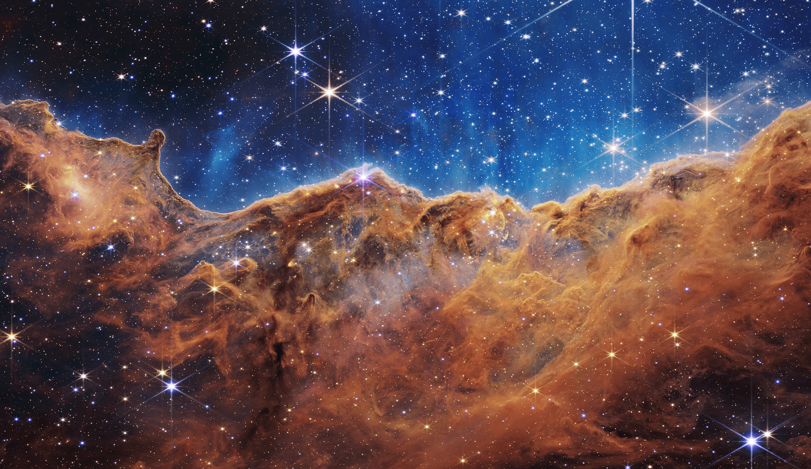
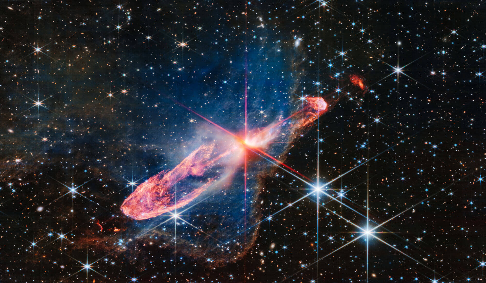
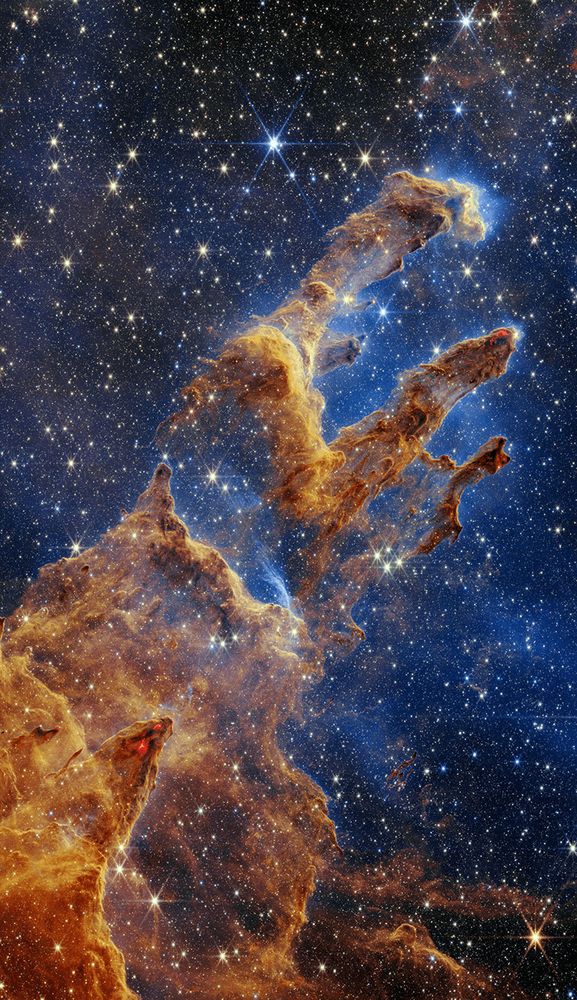
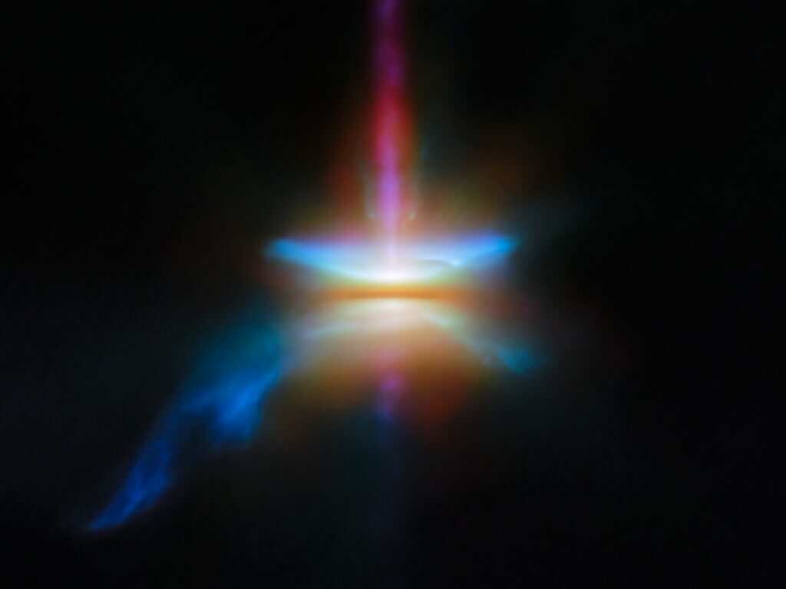
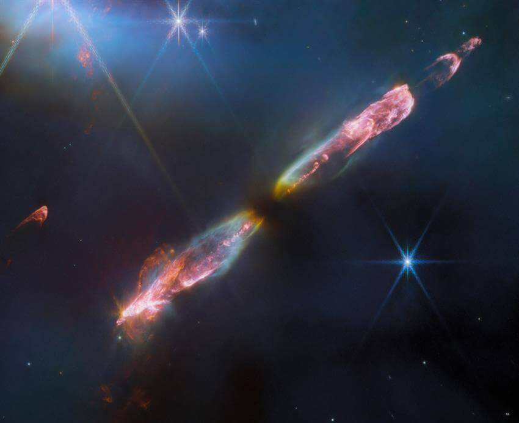
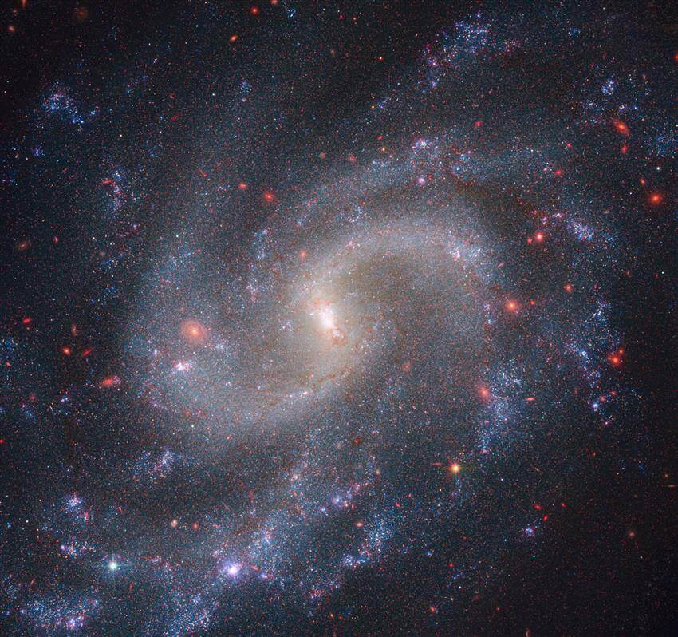
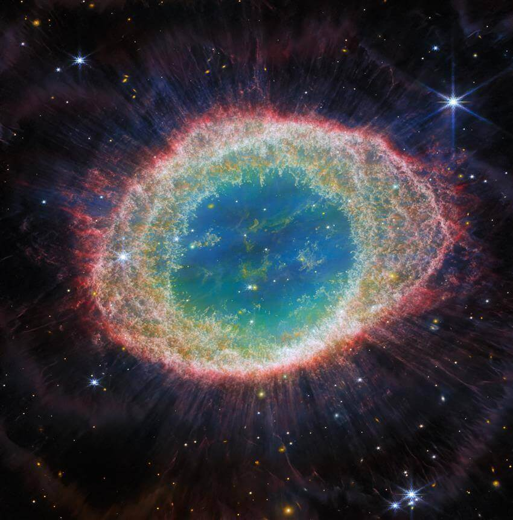
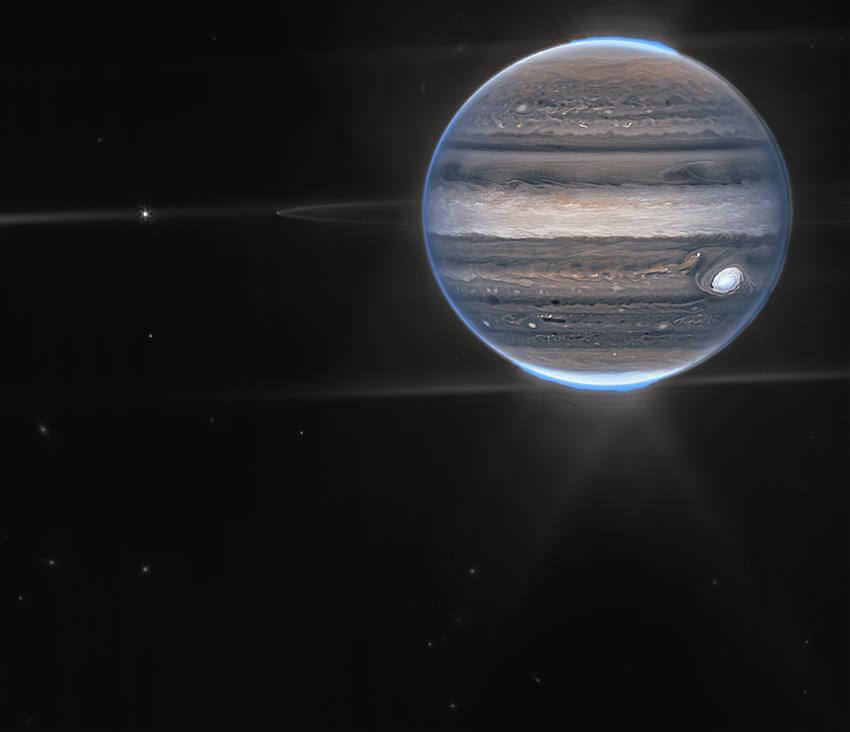

JWST Image Gallery
Explore breathtaking views of the cosmos captured by the most powerful space telescope.
Explore More DiscoveriesAll images are courtesy of NASA, ESA, CSA, and the Space Telescope Science Institute.








